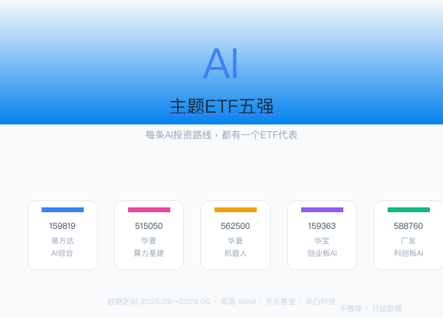
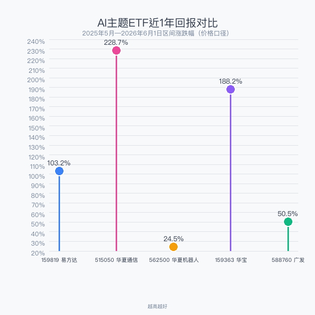
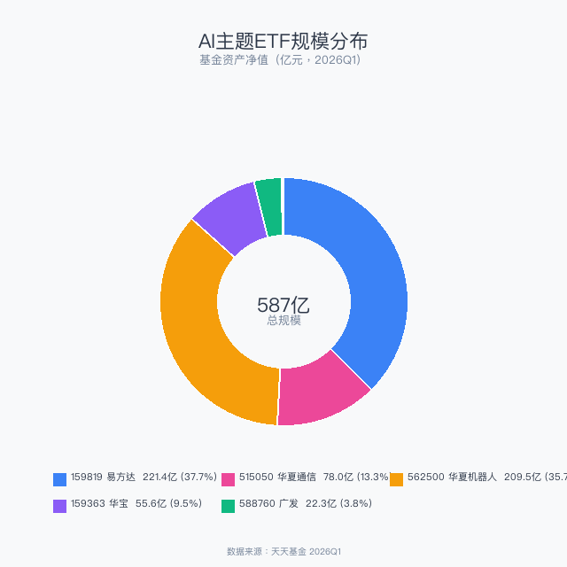
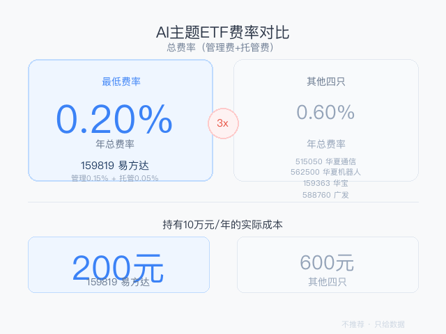
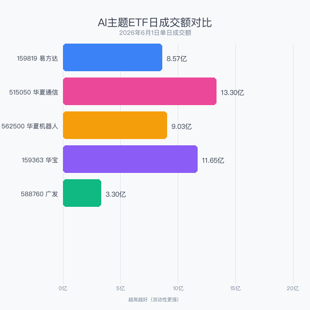

数据截止：2026年6月1日
数据来源：Wind、天天基金、非凸科技
不推荐任何产品，只梳理路线和选手
选哪条路，哪个选手，你自己判断

2026年的A股，AI不是"一个板块"——它是一条完整的产业链。上游的通信光模块，中游的AI芯片和算法平台，下游的机器人和智能终端，每个环节都跑出了不同的ETF选手。
本文不按"规模/回报/费率"逐项对比（那些数据后面都有），而是先帮你理清AI投资的三条路线，每条路线配上最有代表性的ETF。看完你知道的不只是"哪个ETF好"，而是"我该押AI链条的哪一段"。
五只ETF覆盖了AI产业链的上中下游。先看它们各自在AI版图上的位置：
| 代码 | 简称 | AI环节 | AUM(亿) | 成立 | 一句话定位 |
|---|---|---|---|---|---|
| 159819 | 人工智能ETF易方达 | 全产业链 | 221.41 | 2020 | AI全家桶，一篮子端走 |
| 515050 | 通信ETF华夏 | 上游——算力基建 | 78.02 | 2019 | 光模块+服务器，AI卖水人 |
| 562500 | 机器人ETF华夏 | 下游——应用终端 | 209.52 | 2021 | AI的最终载体 |
| 159363 | 创业板AI ETF华宝 | 创业板AI | 55.64 | 2024 | 创业板高弹性AI |
| 588760 | 科创AI ETF广发 | 科创板AI | 22.32 | 2025 | 科创板硬科技AI |

过去一年，AI板块内部走出了截然不同的曲线：
515050通信ETF华夏——228.7%。AI浪潮最先兑现的环节：无论大模型谁赢，都需要光模块传输数据、服务器部署算力。通信ETF就是那个"不管谁淘到金，卖铲子的稳赚"的故事。
159363创业板AI——188.2%。创业板AI公司弹性更足，中小市值在牛市中跑得更快。
159819综合AI——103.2%。全产业链配置分散了风险也分散了收益，但翻倍回报仍然可观。
562500机器人——24.5%。机器人的爆发还在等一个"iPhone时刻"（人形机器人量产）。现在是播种阶段，不是收获期。
AI不是铁板一块。选上游（算力）还是下游（应用），过去一年的回报差了近10倍。
代表选手：159819 人工智能ETF易方达
不想选赛道，就想"买下整个AI行业"？159819跟踪中证人工智能主题指数，从芯片到算法到应用一键打包。关键优势：费率仅0.20%/年（管理费0.15%+托管费0.05%），持有10万一年仅200元。同类产品中最便宜，长期复利优势显著。
221亿AUM、日成交8.57亿，流动性无忧。适合"我不懂AI产业链，但不想错过AI"的投资者。
代表选手：515050 通信ETF华夏
AI军备竞赛最确定的受益者。无论OpenAI还是DeepSeek赢，光模块、服务器、通信设备的需求都在爆发。515050跟踪中证5G通信指数，核心持仓覆盖光模块龙头（中际旭创、新易盛）和通信设备商。近1年228.7%的回报就是最好的证明。
78亿AUM，日成交13.30亿（五只中最活跃），费率0.60%。适合"我看好AI但不相信单一模型公司，我愿意押注基础设施"。
代表选手：562500 机器人ETF华夏
如果说算力是AI的发动机，机器人就是AI的终极载体。210亿AUM（全市场机器人ETF最大），说明市场对机器人的长期信心毋庸置疑。但短期回报平淡（近1年仅24.5%），人形机器人量产尚未大规模落地。
这条路线适合"我相信AI的未来是具身智能，我愿意用时间换空间"的长期投资者。如果你期待的是短期爆发，算力路线可能更合适。
159363 创业板AI ETF华宝和588760 科创AI ETF广发，本质上是前三条路线的"加强版"——同样的AI产业链，但聚焦在创业板的成长型公司和科创板的硬科技公司，弹性更大、波动也更大。
159363成立仅1年多，已跑出188.2%回报；588760聚焦688开头的科创AI公司（寒武纪、海光信息等），是"押注中国AI芯片自主可控"的最直接工具。

159819易方达 + 562500华夏机器人 = 总规模的74%。规模大意味着流动性好、买卖价差小、清盘风险为零。而588760广发仅22亿，是五只中唯一需要注意流动性的。

159819易方达的费率优势是降维打击：总费率0.20%，仅其他四只（0.60%）的1/3。持有10万一年省400元。如果你打算长期持有AI赛道做底仓，这个优势会在复利中持续放大。

前四只日均成交都在8亿以上，百万级订单几秒成交。588760广发成交3.30亿，日常使用足够，大额交易可分批操作。
| 159819 易方达 | 515050 通信 | 562500 机器人 | 159363 华宝 | 588760 广发 | |
|---|---|---|---|---|---|
| 路线 | AI全家桶 | 上游算力 | 下游应用 | 创业板AI | 科创板AI |
| AUM | 221亿 | 78亿 | 210亿 | 56亿 | 22亿 |
| 近1年回报 | 103.2% | 228.7% | 24.5% | 188.2% | 50.5% |
| 日成交 | 8.57亿 | 13.30亿 | 9.03亿 | 11.65亿 | 3.30亿 |
| 年费率 | 0.20% | 0.60% | 0.60% | 0.60% | 0.60% |
| 适合 | 不了解AI产业链 | 押注AI基建 | 长期等风来 | 创业板弹性 | 芯片自主可控 |
最后一个建议：如果你对AI产业链的判断是"整体向上，但不确定哪个环节先爆发"，159819易方达是最省心的选择（全产业链+最低费率）。如果你想主动押注某个环节，算力（515050）过去一年回报最高，机器人（562500）可能是未来的最大故事。